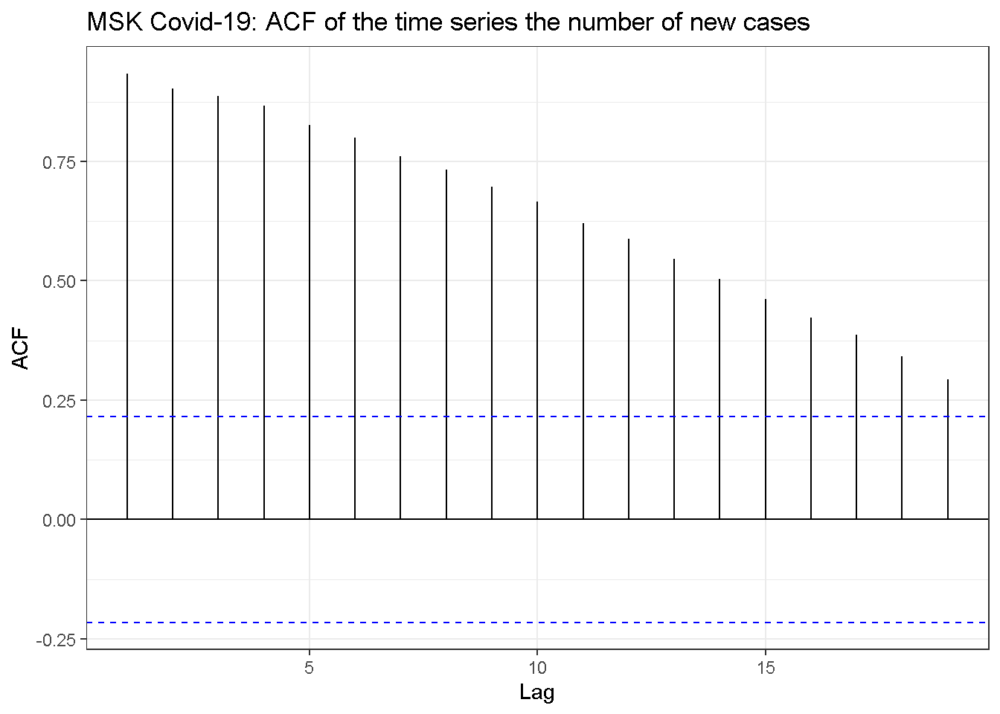
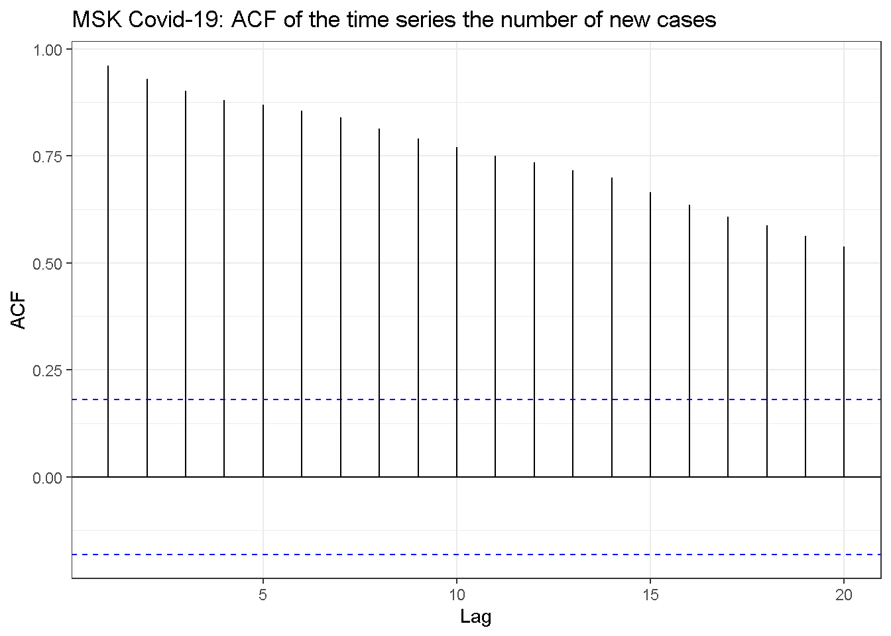

Dataset compilation: Telegram and HTML parsing for COVID-19 epidemic data
Contents
The data about hospitalizations with COVID-19 in Moscow are hard to find in public datasets. However these data are daily published in the specialized Telegram channel, so they can be parsed from there to be used in data analysis.
The first step is to download Telegram chat stream. That can be easily done with the desktop Telegram client so I will skip this step and assume that the necessary data, i.e. a set of files “messages.html” is ready (here is the copy). Below I will explain how to convert them into a dataset.
Step 1. Load libraries.
I will need the usual stuff plus the package rvest to load HTML data and XML2 to process the HTML DOM tree.
#Usual libraries
library(purrr)
library(stringi)
library(stringr)
library(data.table)
library(ggplot2)
#HTML processing
library(rvest)
library(xml2)
#For ACF plots
library(forecast)
#Regression trees
library(rpart)
Step 2. Load HTML file.
To load HTML data the function read_html() from the package rvest may be used. I assume the data are stored in the folder data. While the Telegram function “Export” created several files with messages I will use only one file with the most recent messages.
html1 <- read_html("data/messages3.html")
To check if the data are correctly loaded the function xml_name() may be used. It will show the name of the root node. It is html in this case so everything looks ok.
xml_name(html1)
## [1] "html"
Step 3. Extract data from HTML/XML tree.
The following steps are bases on the knowledge of the DOM structure that can be viewed in the Chrome or Firefox browsers after pressing F12 key.
The task is to find the first div node in the document that satisfies the search criteria:\
- the element should have the attribute “class”" (that is indicated by
@classconstruction in the xpath query);\ - the “class” attribute value should be equal to “history”.
To indicate that the search must be performed globally, the xpath query starts with “//.”
The resulting query looks like this:
div_history <- xml_find_first(html1, xpath="//div[@class=\"history\"]")
capture <- capture.output( print(div_history) )
head(capture, 7)
## [1] "{html_node}"
## [2] "<div class=\"history\">"
## [3] " [1] <a class=\"pagination block_link\" href=\"messages2.html\">\\nPrevious messag ..."
## [4] " [2] <div class=\"message service\" id=\"message-269\">\\n\\n <div class=\"body ..."
## [5] " [3] <div class=\"message default clearfix\" id=\"message2038\">\\n\\n <div cl ..."
## [6] " [4] <div class=\"message default clearfix\" id=\"message2039\">\\n\\n <div cl ..."
## [7] " [5] <div class=\"message service\" id=\"message-270\">\\n\\n <div class=\"body ..."
The structure of the stream is following:\
- The nodes with the class “message service” are the ones that containing the publication date.\
- The messages with the information we seek have the class attribute “message default clearfix joined” (i.e. text with a picture).
Below I use the function xml_find_all() with the insane хpath argument to extract both nodes containing dates and nodes with COVID cases information. The symbol “|” in the xpath merges the two search conditions.
nodes1 <- xml_find_all(div_history, xpath=".//div[@class='message service']/div[@class='body details'] | .//div[@class='message default clearfix joined']/div[@class='body']/div[@class='text']")
Now is the time to create the new function try_to_extract_date() that tests the node if it contains a date of the publication and in that case it tries to extract the date.
The following needs to be noted:\
- I will use the specific form of the argument
xpathto forcexml_find_first()to check the node to satisfy the criteria but not to select the node. The returned value will be logical;\ - the function
xml_text()will be used to extract a date in text format;\ - All whitespaces will be removed from the date string;\
- I will temporarily switch to USA time locale for type conversion in
as.Date().This is necessary because the dates in Telegram stream are published in the USA locale, and my R is running in Russian locale;\ %Bsymbol in theas.Date()format argument is used to indicate that a month is supplied by a name not by its number.
try_to_extract_date <- function(node) {
if( xml_find_first( node, xpath="@class='body details'") ) {
#this is a date record
loc1 <- Sys.getlocale(category = "LC_TIME")
Sys.setlocale(category = "LC_TIME")
Sys.setlocale("LC_TIME", "English") # Win
date1 <- node %>% xml_text() %>%
str_replace_all("\\s", "") %>%
as.Date("%d%B%Y")
Sys.setlocale("LC_TIME", loc1)
return(date1)
} else {
return(NULL)
}
}
try_to_extract_date(nodes1[[1]])
## [1] "2020-11-23"
The second function will check the node to contain the data I seek. The following code decisions should be noted:\
- The text will be transliterated from Russian with the function
stri_trans_general()from the packagestingifor regexp to work;\ - The extraction itself will be done by the function
str_extract()from the packagestringr.\ - I will use
purrrchained operation to streamline the code.
try_to_extract_info <- function(node) {
#Selection
s <- xml_text( node) %>%
stri_trans_general("russian-latin/bgn") %>%
str_replace_all("\\s", "") %>%
str_to_lower()
if( !str_detect(s, "gospitalizirov") ) {
return(NULL)
}
#Extraction
new_hosp <- s %>%
str_extract("gospitalizirov\\D+\\d{1,6}\\D") %>%
str_extract("\\d+") %>%
as.numeric()
new_diag <- s %>%
str_extract("podtverzhd\\D+\\d{1,6}") %>%
str_extract("\\d+") %>%
as.numeric()
curr_ivl <- s %>%
str_extract("naivlvbol\\D+\\d{1,6}\\D") %>%
str_extract("\\d+") %>%
as.numeric()
new_dead <- s %>%
str_extract("skonch\\D+\\d{1,6}\\D") %>%
str_extract("\\d+") %>%
as.numeric()
return( list(new_hosp=new_hosp, new_diag=new_diag,
curr_ivl=curr_ivl, new_dead=new_dead))
}
try_to_extract_info(nodes1[[3]])
## $new_hosp
## [1] 1648
##
## $new_diag
## [1] 5838
##
## $curr_ivl
## [1] 429
##
## $new_dead
## [1] NA
Now it is time to iterate over the nodes list extracting either date or data and gluing them into a single data frame.
data1 <- vector( length(nodes1), mode="list")
i <- 1
n0 <- 0
n <- length(nodes1)
curr_date <- NULL
while( i <= n ) {
s <-try_to_extract_date( nodes1[[i]])
if( !is.null(s)) {
curr_date <- s
} else {
s <-try_to_extract_info( nodes1[[i]])
if( !is.null(s)) {
n0 <- n0+1
data1[[n0]] <- data.frame(s)
data1[[n0]]$date <- curr_date
}
}
i <- i+1
}
dt.data <- rbindlist( data1[1:n0])
Congratulations with success.
dt.data[1:5]
## new_hosp new_diag curr_ivl new_dead date
## 1: 1648 5838 429 NA 2020-11-24
## 2: 1635 4685 440 NA 2020-11-25
## 3: 1759 6075 437 NA 2020-11-26
## 4: 1518 7320 419 NA 2020-11-28
## 5: 1376 6524 431 NA 2020-12-01
Store the dataset for later use.
write.csv(dt.data, file="covid-moscow-dataset.csv")
Some visualizations
Now it is time to plot the data!
ggplot(dt.data, aes(x=date, y=new_diag, color="Diagnosed"))+
geom_path(size=1)+
geom_path(aes(y=new_hosp, color="Hospitilized"), size=1)+
ggtitle("COVID-19 MSK: Number of newly hospitalized and diagnosed patiens")+
xlab("Date")+
scale_color_discrete(name="")+
ylab("Number of patients")+
theme_bw()+
scale_x_date(date_labels = "%d%-%m-%Y")

No indication for periodicity in the auto correlation function (same is in logs).
ggAcf(dt.data$new_diag)+
ggtitle("MSK Covid-19: ACF of the time series the number of new cases")+
theme_bw()

No clear indication for a time lag between the two series. However cross correlation function is more biases towards negative lags as it should be: diagnostic sightly precedes hospitalizations.
ccf1 <- ccf(dt.data$new_diag, dt.data$new_hosp,
plot=FALSE)
df.ccf1 <- data.frame(ccf=ccf1$acf, lag=ccf1$lag)
ggplot(data.frame(ccf=ccf1$acf, lag=ccf1$lag), aes(lag, ccf))+
geom_path(color="blue", size=1)+
geom_vline(xintercept=0, linetype=2) +
ggtitle("COVID-19 MSK: CCF new cases number ~ new hospitalizations number")+
theme_bw()

The ratio of the number of hospitalizations to the number of new cases grows with time. More and more sick people skip official medicine entirely.
#Build regression tree for stepwise approximation
dt.data[ , ratio.hosp.diagn := new_hosp/new_diag]
reg.tree <- rpart(ratio.hosp.diagn ~ date, data=dt.data,
control=rpart.control(cp = 0.02))
dt.data[ , hosp.rat.tree:= predict(reg.tree, dt.data)]
ggplot(dt.data, aes(x=date, y=new_hosp/new_diag, color="Data"))+
geom_path(size=1)+
geom_smooth(aes(color="Lowess"), size=1)+
ggtitle("COVID-19 MSK: Ratio of the number of new hospitalizations to\n the number of new registered (diagnosed) cases")+
xlab("Date")+
ylab("Ratio")+
geom_path(aes(y=hosp.rat.tree, color="Reg. tree"), size=1)+
scale_color_discrete(name="") +
theme_bw()+
scale_x_date(date_labels = "%d%-%m-%Y")

Let’s check the ratios by direct calculations:
display_table<-function(dd, ndigits=1, caption="") {
if( isTRUE(getOption('knitr.in.progress')) ) {
knitr::kable(dd,
caption=caption, digits=ndigits, format="html", align="c")
} else {
ndg <- getOption("digits")
options(digits = ndigits)
print(dd, digits = ndigits)
options(digits = ndg)
}
}
dt.average.hz.ratio <- data.table( `Date` = c("Before 2020-12-31", "After 2021-02-01"),
`Ratio`=
c(dt.data[ date <= as.Date("2020-12-31"), sum(new_hosp)/sum(new_diag)],
dt.data[ date > as.Date("2021-02-01"), sum(new_hosp)/sum(new_diag)]))
display_table(dt.average.hz.ratio, ndigits=2, caption="Ratio of the number of hospitalizations to the number of cases")
| Date | Ratio |
|---|---|
| Before 2020-12-31 | 0.25 |
| After 2021-02-01 | 0.45 |
Author Vladislav Borkus
LastMod 2024-03-24
License (C) Vladislav Borkus